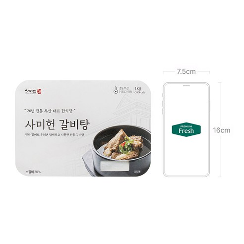
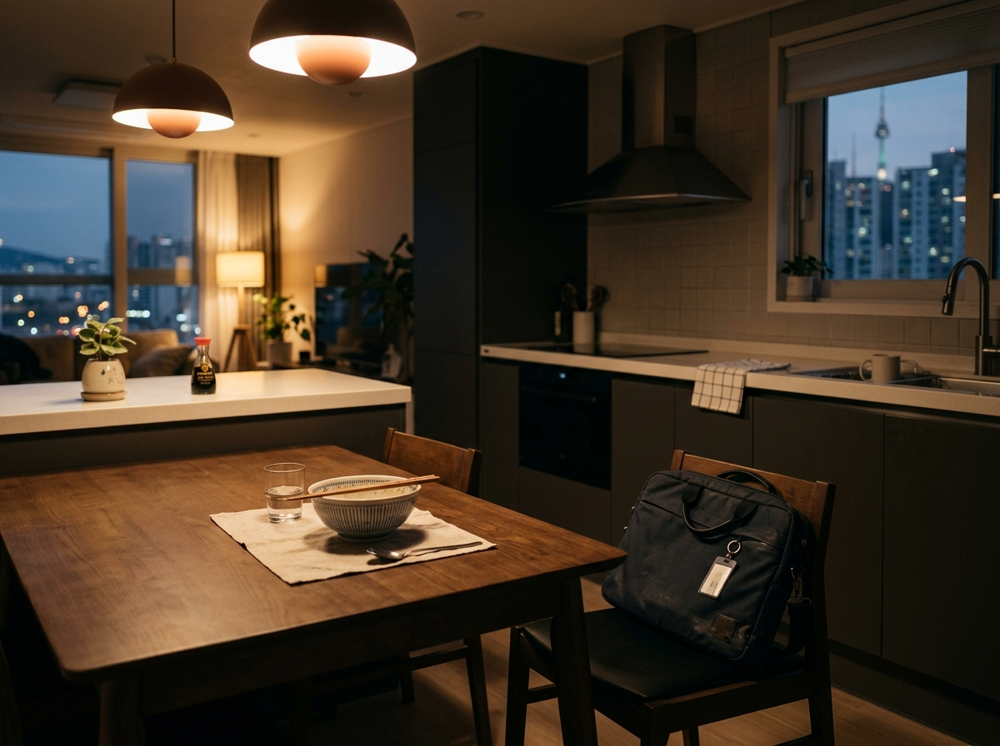
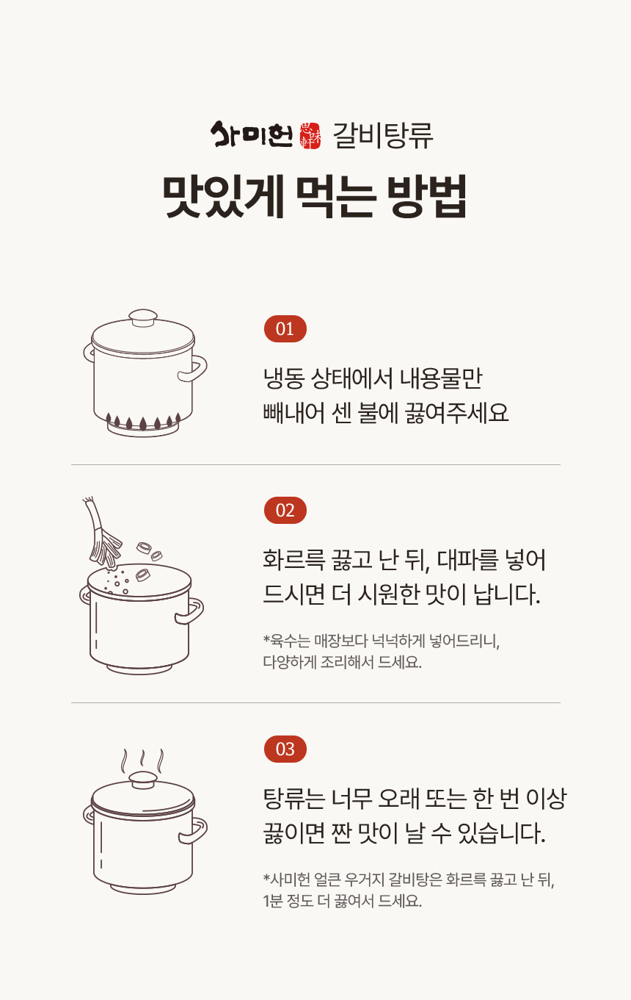
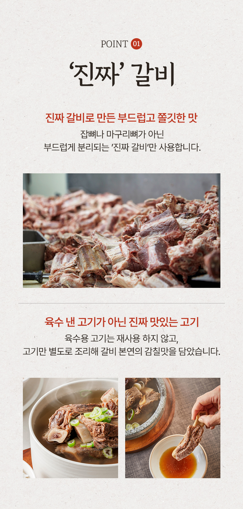
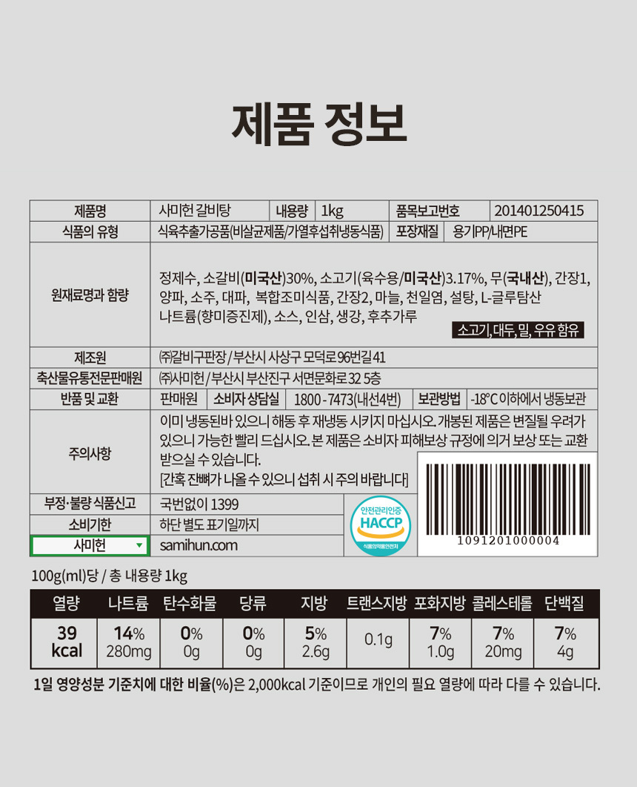
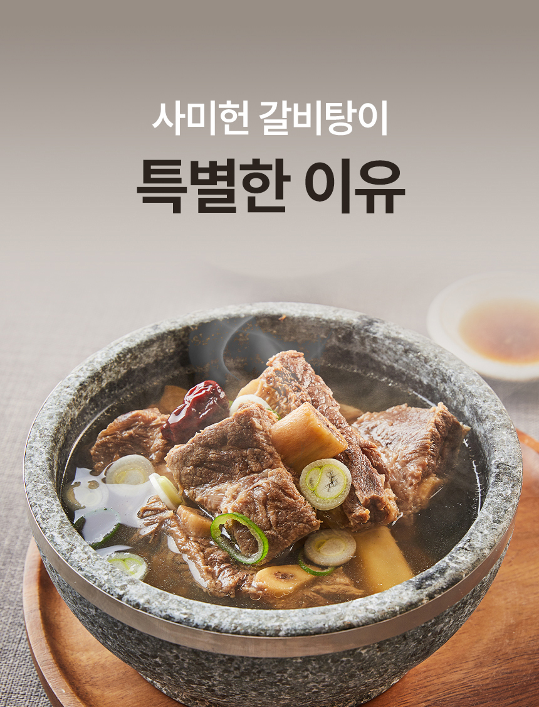

부산까지 가기엔 먼 저녁
이동과 기다림까지 생각하면, 오늘은 다음으로 미루게 됩니다.
부산에서 먹던 갈비탕이 생각나면, KTX 표부터 찾고 계신가요?
부산에서 시작된 사미헌의 손질한 소갈비와 맑은 육수.
냄비에 붓고 끓이면, 멀었던 한 끼가 오늘 식탁에 놓입니다.
1kg 냉동 팩에 담긴 갈비와 육수를 냄비에 붓고 끓여 보세요.
쿠팡에서 지금 선택 가능한 옵션과 가격, 배송 조건을 확인할 수 있습니다.
오늘 저녁을 또 미루고 싶지 않다면, 먼저 조건부터 확인하세요.
이 포스팅은 쿠팡 파트너스 활동의 일환으로, 이에 따른 일정액의 수수료를 제공받습니다.
구매가 바로 확정되지 않습니다. 쿠팡에서 옵션·가격·배송 조건을 보고 결정하세요.

부산까지 가야 했던 한 그릇을,
집에서 뚝딱 차릴 수 있는 이유는 뭘까요?
따뜻한 갈비탕이 생각나도 부산행을 계획하기엔 시간도, 기력도 빠듯한 날이 있습니다.
집에서 처음부터 고깃국을 끓이자니 손질과 긴 조리가 부담스럽고, 배달을 기다리자니 저녁은 더 늦어집니다.
이동과 기다림까지 생각하면, 오늘은 다음으로 미루게 됩니다.
갈비를 손질하고 육수를 내는 일은 퇴근 뒤에 시작하기 어렵습니다.
배달을 기다리는 동안, 따뜻한 한 끼는 더 멀게 느껴집니다.
조미료의 인위적인 텁텁함 없이 조리장이 직접 핏물과 기름을 손수 걷어내 담백하고 깊은 국물
미국산 엄선 소갈비 30% 함유. 질기지 않고 뼈에서 부드럽게 분리되어 온 가족이 편안한 식사
줄 서서 먹는 부산 서면의 미식 랜드마크 사미헌의 비법 레시피를 단 한 팩에 온전히 담았습니다
장시간 끓일 필요 없이 해동 후 센 불에서 끓이다 중불 3~5분 한소끔이면 완벽한 식탁 완성
사미헌 갈비탕은 1kg 냉동 팩에 갈비와 육수를 담았습니다.
내용물을 냄비에 붓고 끓여 한소끔 내면, 밖으로 나가지 않아도 따뜻한 갈비탕 한 그릇을 차릴 수 있습니다.
지친 퇴근길에 KTX나 식당 줄서기, 번거로운 주방 노동 사이에서 갈등하던 순간

퇴근 후 긴 이동과 번거로운 조리가 부담스러운 순간
해동된 팩을 냄비에 붓고 한소끔 끓여 식탁에 올리는 따뜻하고 든든한 한 그릇
1kg 냉동 팩에서 완성되는 갈비탕

내용물을 냄비에 넣고 센 불로 끓입니다.
끓기 시작하면 중불로 줄여 3~5분 더 끓입니다.
오래 끓이거나 졸이면 짜질 수 있어, 한소끔만 끓여 드세요.
갈비탕을 처음부터 만들 때 가장 오래 걸리는 건 갈비와 육수를 준비하는 일입니다.
사미헌 갈비탕은 소갈비와 육수를 담은 1kg 냉동 제품이라, 필요한 건 냄비와 끓일 시간입니다.

완성된 갈비탕에 갈비를 담아, 한 그릇의 중심을 분명하게 보여 줍니다.
제품 정보에 총 내용량 1kg과 냉동 보관 방법이 표시되어 있습니다.
제품 정보에 소갈비(미국산) 30%가 표시되어 있습니다.

제품 후면 원재료명 및 함량 표기 확인 기준 (사미헌 갈비탕 1kg 정품)
“조리할 것도 없이 해동해서 끓이면 되니 간편하다.”
“국물이 맑고 깊게 느껴졌다.”
제품의 규격과 조리 조건을 먼저 확인하면, 오늘 저녁에 맞는 선택인지 판단하기 쉽습니다.
A. 총 내용량은 1kg입니다. Part 1 자료에서는 1~2인분으로 안내되며, 성인 두 명이 먹을 때 고기 양이 아쉽다는 구매자 의견도 있어 식사 인원과 반찬 구성을 함께 고려해 주세요.
총 내용량 1kg 표기 확인 · 사미헌 갈비탕 제품 정보 표 기준
A. Part 1 자료에는 냉장 자연 해동 후 냄비에 붓고, 끓기 시작하면 중불에서 3~5분 더 끓이는 방법이 안내되어 있습니다. 제품 상세 이미지에는 냉동 상태에서 내용물을 꺼내 끓이는 안내도 있으므로, 구매한 제품 포장의 조리법을 우선해 주세요.
A. 오래 끓이거나 졸이면 짜질 수 있어 한소끔만 끓이는 것을 권합니다. 대파를 더하면 더 시원하게 즐길 수 있다는 제품 안내가 있습니다.

갈비와 육수를 따로 준비하지 않고, 1kg 냉동 팩을 냄비에 붓고 끓이면 됩니다.
이제 쿠팡에서 오늘 저녁에 맞는 옵션과 조건을 확인해 보세요.
다음에 미루기 전에, 오늘 저녁에 맞는 조건인지 확인하세요.
이 포스팅은 쿠팡 파트너스 활동의 일환으로, 이에 따른 일정액의 수수료를 제공받습니다.
구매가 바로 확정되지 않습니다. 쿠팡에서 옵션·가격·배송 조건을 보고 결정하세요.